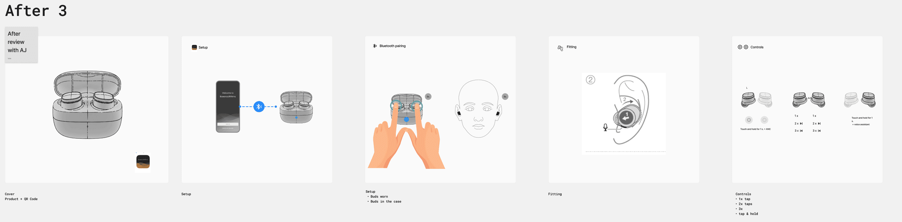
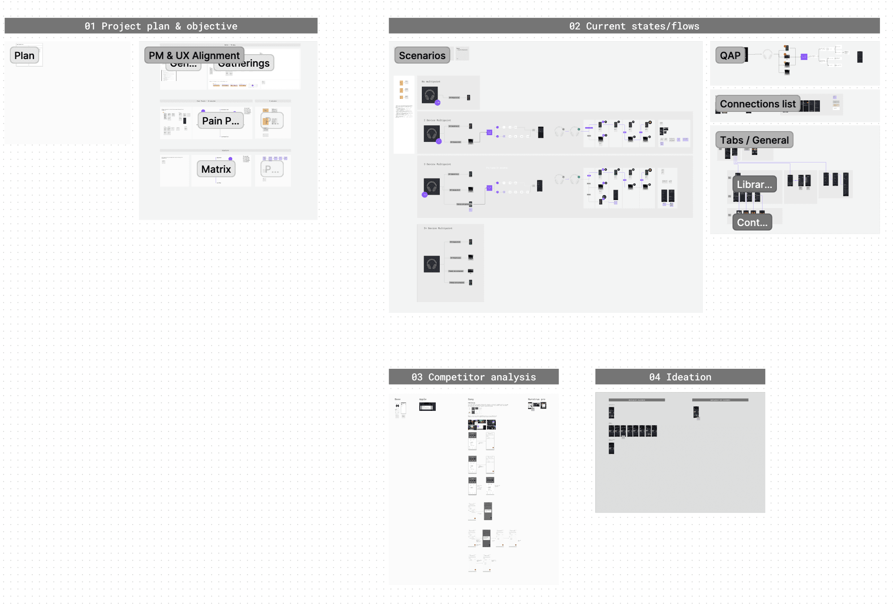
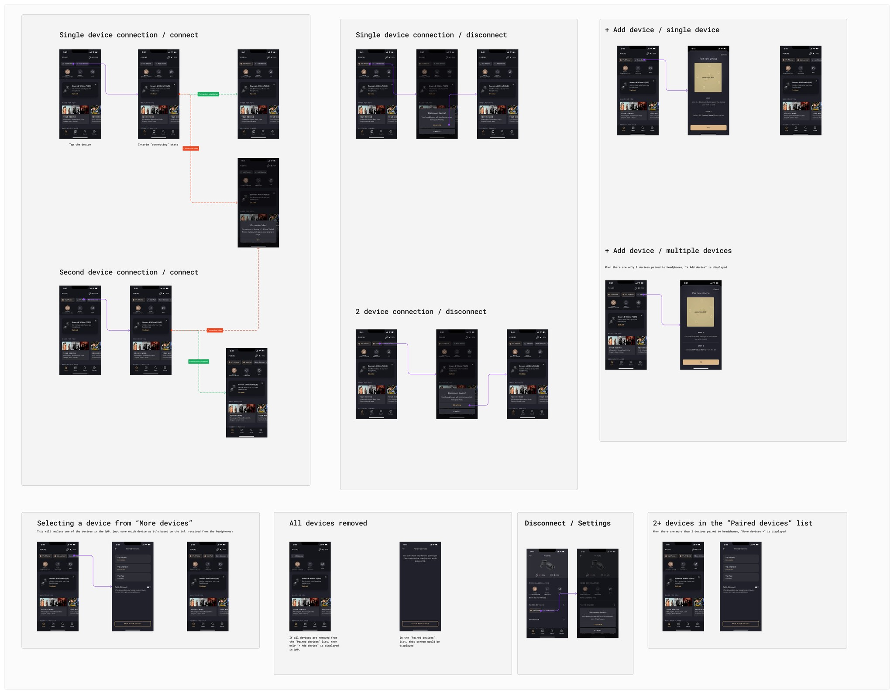
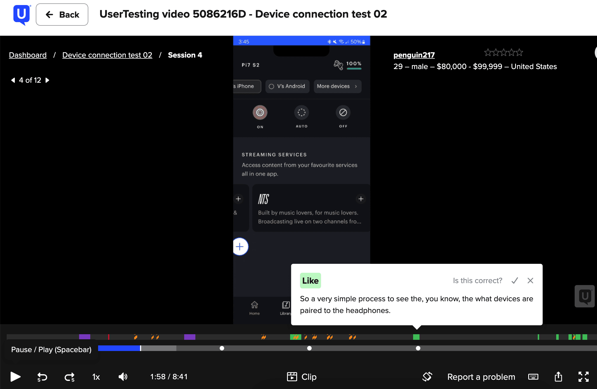

Case studies
Designing end-to-end experiences for the premium brand
Software experience, physical product controls, interactions.
Case studies
Software experience, physical product controls, interactions.
The ideal onboarding experience for premium audio products is one users barely notice.
The first interactions — opening the box, understanding controls, pairing devices, learning gestures — shape whether the experience feels effortless or intimidating.
Designing a seamless transition from ownership to emotional connection.
At this stage, users begin to explore the product's capabilities and form their initial impressions. But for the showcase, i need to highlight the literature pack first.
A clear, structured Quick Start Guide — now adopted across Bowers & Wilkins and Denon headphones.
Physical experience
Prototyping, testing quick start guides for products.
Read more


Prototyping, testing product controls, button placement, observing natural wrist direction when idle / pressing state.
Read more
Digital experience
Owning the planning and direction of the app experience by utilising AI for research and user testing, translating insights from reviews, analytics, product feedback, and community forums into clear priorities and opportunity areas.
Read more
Shaping future experience strategy by identifying critical pain points and using ongoing research insights to inform product direction. Currently leading a re-iteration of the app's information architecture to better align with user needs and behaviours.

